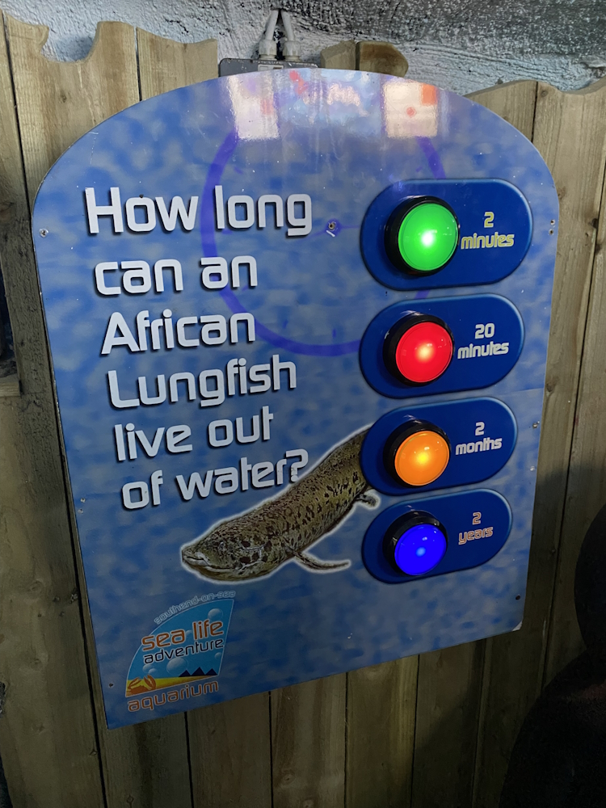
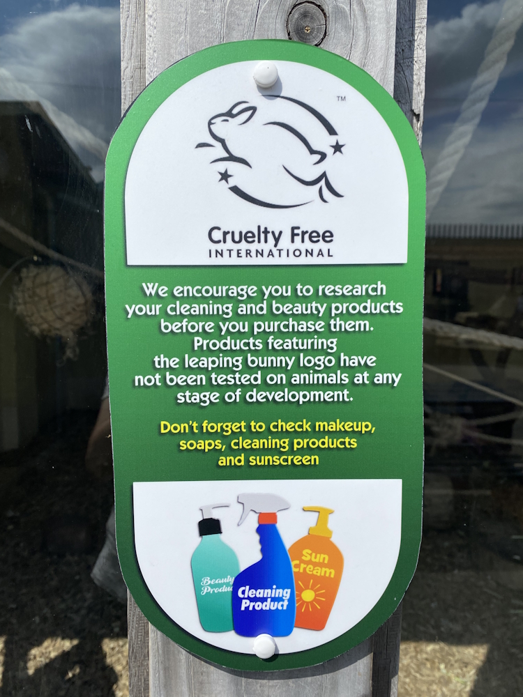
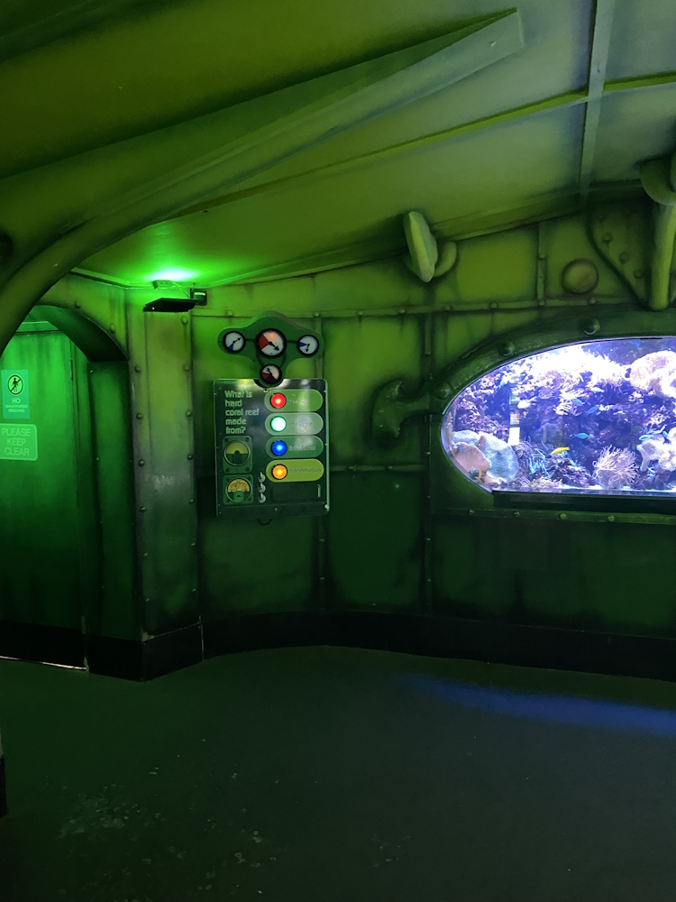
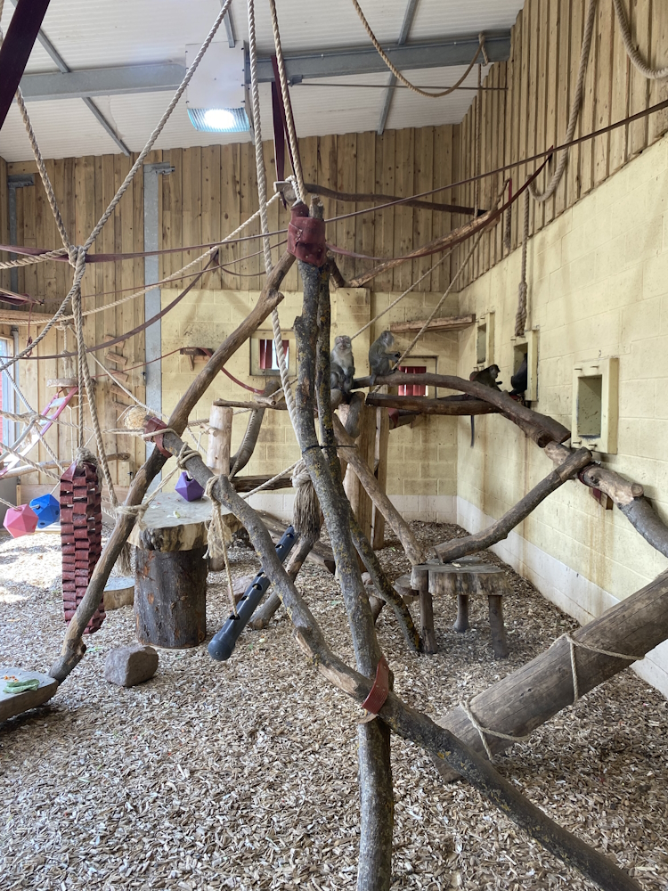

This pool had stairs at the back leading up to a raised viewing area, but the pool was visible from all other angles at this lower level.
Primates, Piranhas, and Penguins: My Visit to Sealife Adventure
11/07/2025
Zoo visits
 at Sealife Adventure")
Last weekend, I visited Sealife Adventure in Southend-on-Sea, Essex. A relatively small, self-titled 'zooquarium', Sealife Adventure has recently become a BIAZA (British and Irish Association of Zoos and Aquariums) accredited organisation[8]. It is home to a range of both aquatic and terrestrial animals. In this post, I want to discuss my opinions on what Sealife Adventure has to offer.
General Layout
First of all, let's talk about Sealife Adventure's layout. Overall, I really liked how everything was arranged - the entire 'zooquarium' followed a continuous path with two aquarium portions separated by the zoo section, which was mostly indoors. Personally, I liked the break between different aquarium sections as it meant that it didn't feel too cramped and claustrophobic by the end. I also thought that it was a good way to keep visitors engaged throughout their visit, especially children with short attention spans.
Another thing I liked was the lack of stairs. I think I counted only one set of stairs (although I might have just not seen some), leading to alternative viewing areas for one of the exhibits in the aquarium. While it is a shame that people who cannot use stairs (for example, wheelchair users) could not utilise this area, it is still good that they are not completely cut off from the exhibit. Some areas, however, did have relatively steep slopes or narrow corridors, and Sealife Adventure themselves say that an assistant may be needed for wheelchair users in these areas.
All in all, the zooquarium was incredibly easy to navigate. There was no backtracking in trying to find specific exhibits, and in total, it only took an hour or two to find everything. The layout was designed in such a way that missing anything would be quite impressive. In fact, I do not think that they even had maps available (although they would have come in handy so I could show you the layout, instead of just telling you about it).
Education and Engagement
Signage
In general, the signs providing information about the different species on display were clear and mostly split into small, manageable chunks of information. There were a couple signs that I thought had a bit too much writing on them, but these were definitely the minority. The biggest problem I found was that a few of the signs had outdated information on them, especially regarding the IUCN Red List evaluation of the species (that is, how threatened with extinction a species is based on scientific review). As well as this, the majority of the aquarium species were classified as 'least concern' on this scale, and the signs provided no further information. I think that it would be useful to talk more about the threats that these species face despite their IUCN status, such as from fishing, climate change, and pollution, so that visitors have a better idea of why they are on display at an aquarium in the first place[1][15].
This sign about the edible sea urchin states that they are listed as 'least concern' on the IUCN Red List. However, in 1996, they were reclassified as 'near threatened', one step further along the scale[16].
A few of the signs I saw contained large passages of text, and although they were informative, just seeing that much text would make some visitors not want to read it. A particular sign I thought would unfortunately be very easily overlooked was one about a study on tortoises and turtles, performed using data provided by Sealife Adventure. As well as having a lot of text, the font size was quite small and could be difficult to read for people with certain visual impairments and learning difficulties, such as dyslexia. I think it could be greatly improved if the information was given in smaller, more digestible information points, and in a larger font.
Although this sign is informative, the amount of text on there is enough to make many visitors uninterested.
Unfortunately, a few of the signs had some basic spelling and grammar errors. Personally, I feel that this makes the signs seem a bit 'low effort', as if they were thrown together last minute. As well as this, inconsistent and incorrect spelling and grammar could potentially make signs more difficult and frustrating for people with learning difficulties as mentioned above.
As a side note, I wanted to mention that the very final section of the aquarium seemed to contain images produced using generative AI in some of its signs. While I cannot confirm this to be 100% the case (and therefore this is not an accusation), I do think it is important to state that generative AI does have real, negative effects on the environment[7][18]. I think that conservation organisations like zoos, aquariums, and botanical gardens should be extra careful in refraining from its use.
Now that I've gone on about everything I didn't like about the signs, let's move on to what I thought was really good:
First of all, throughout all the aquarium sections, there were interactive quiz boards with buttons that visitors could press to answer a question written on the board. These would play sound effects and pre-recorded responses, which I thought was a great idea to get visitors (especially children) excited about learning. Of course, these would not be accessible to people with hearing difficulties, but this could be remedied by adding flaps to reveal answers, for example. Overall, however, I thought that they were a great idea, and they were found all over the aquarium.

My sister (20) was shocked by the correct answer to this question!
There were also a few signs scattered around that provided information about conservation projects or things visitors could do to help conservation and animal welfare efforts. For example, on the enclosure for the crab-eating macaques (Macaca fascicularis), there was a sign urging visitors to look for the 'leaping bunny logo' from Cruelty Free International to make sure that they avoid products that are tested on animals. This was made even more effective by the fact that the macaques themselves came from an animal testing facility in Italy. Another example of this was a little corner containing signs that highlighted local conservation projects that Sealife Adventure has been helping out in, such as the Big Seaweed Search, and various beach cleans. Although the placement of these signs may not have been the best for catching visitors' attention, I do think that it is important for conservation organisations to be transparent and keep people up to date with the work they perform.

This sign is informative without being too long, and calls visitors to action without being too depressing.
Exhibit Design
The main aquarium portion was split up into five areas, mostly corresponding with different aquatic habitats. Each one of these sections had a very clear theme, and I thought that the decoration chosen to convey these was amazing. For example, the section for the tropical and subtropical species including corals, clownfish, and angelfish, was called 'HMS Sub Tropical'. This section was decorated to look like the interior of a submarine, with windows peering out into coral reefs and schools of everyone's favourite fishes from Finding Nemo. The following area was home to several freshwater species like piranhas (Pygocentrus nettereri), and was decorated like a rainforest. I think that the stark differences between the decoration of the different areas kept things engaging for visitors, and also reflected the huge differences between the different habitats of the species held in the aquarium. This is something I feel is often easily overlooked and forgotten, compared to terrestrial animals.

The HMS Sub Tropical zone. I really liked the theme of this area, it was very creative and engaging.
There were a couple of smaller aspects of the exhibits that I also really liked. One of these, simple as it is, was the clear labelling of the feeders used for the starfish in the aquarium. These were designed to mimic some kind of bivalve mollusc (like clams and mussels, et cetera), one of the food sources for common starfish (Asterias rubens) in the wild[2]. Clearly pointing this out allows visitors to gain some insight into how the animals at the zooquarium are looked after, and from what I have observed, many people love any kind of 'behind-the-scenes' information at zoos and aquariums. Another part of Sealife Adventure that provides this is their aquatic quarantine area. This section is visible through windows and openings in a corridor opposite the penguin enclosure, and has a big sign explaining what the area is used for (although, I think the information would be better presented as several smaller signs).
This starfish feeder is made to look like a mussel, and is filled with the starfish' food.
Part of the zoo section at Sealife Adventure is a prehistoric-themed exhibit called 'Pangaea Adventure'. As well as some animatronic dinosaurs, this area is also home to a few species of animals that are alive today, such as alligator snapping turtles (Macrochelys temminckii), giant African land snails (Lissachatina fulica), and several fish that were all originaly pets. While I liked the overgrown, wild aesthetic of this area, I did feel that the animatronics overshadowed the actual animals, and in general it was consistently, extremely loud. This could be a big issue for people with sensory issues such as those with ASD (autism spectrum disorder). Although it is not required to enter this area, you do need to go through it to get to the 'Wild Bugs and Beasts' section. I think it would benefit from a slight reduction in volume in general (and maybe certain days or times where the volume is reduced significantly, so that everybody can enjoy it).
The 'Wild Bugs and Beasts' exhibit itself I really enjoyed. This area was home to several species of butterflies, as well as some reptiles and frogs. My favourite part of it, however, was the tube that ran through it, through which you could watch leafcutter ants (Atta cephalotes) marching along. As per one of the signs on the tube, there were 30 metres of tubing for the ants to walk through, in order to mimic the length of their foraging routes in the wild. I thought that this was an amazing idea, and you could follow the tube all the way to the tank that held the ants' food. As well as this, the butterflies' chrysalises were also on display behind glass, with a sign next to it that visitors could use to identify the different species. I felt that both of these were very engaging, and a great way to get people excited about insects and other invertebrates.
These ants are carrying food from their pile of leaves up and into a tube that leads to their nest.
Enclosure Design
Before I start talking about enclosure design, I would like to say that I am not extremely knowledgeable about enclosure design for aquatic species, so I will focus on the animals in the zoo section at Sealife Adventure. As well as this, I won't go into detail on all the enclosures, as otherwise this post would take around a year to read fully.
Crab-eating macaques (Macaca fascicularis) are an arboreal species (that is, they live in trees)[14]. Because of this, I was very happy to see that in both their indoor and outdoor areas, the macaques at Sealife Adventure had a lot of climbing opportunities in the form of branches, ropes, and recycled firehoses. This varied environment provides environmental enrichment for the animals, which gives them opportunities to exhibit species-specific behaviour, and therefore improves their overall welfare[17]. As well as this, there were several areas where the macaques could hide either from the public, or from a particularly stressful event or encounter, which is important for any animal[5]. For these macaques specifically, this provision is even more important given their background as laboratory animals (Sealife Adventure discloses to the public that the macaques still exhibit negative reactions towards items like lab coats and face masks).

The indoor portion of the macaques' enclosure was full of different climbing opportunities and enrichment toys to keep their brains stimulated.
The meerkats (Suricata suricatta) were also provided with plenty of areas to hide. As well as this, the substrate (ground material) provided in their enclosure allowed them to dig though it to forage for food, which is one of the natural behaviours exhibited by this species)[9]. Although I am not certain on the exact size of the enclosure, it was quite large. This is important for meerkats as it allows for individuals to keep their distance from each other. Too small, and fights might frequently occur[4].
Two species of tortoise were housed at the zoo. Spurred tortoises (Centrochelys sulcata), and an unlabeled species (I did not see a sign for the other type). Both tortoises seemed to be able to leave their indoor enclosures into the same outdoor area as the meerkats, which, alongside dedicated lamps inside, allowed them access to UVB lighting. This is important for, among many other things, proper metabolism of calcium[6][11]. In the wild, spurred tortoises dig burrows in order to avoid excess exposure to the sun[12]. In their indoor enclosure at Sealife Adventure, however, the flooring consisted of hard tile. Though this area opened up into the same area as the meerkats (with a diggable substrate), the door was shut when I visited, and I do not know when it is usually opened. Of course, overexposure to sunlight is not as big a risk indoors. However, depending on how often the tortoises are let out, I think it could be worthwhile to offer digging opportunities, such as a tray filled with dirt or sand, as environmental enrichment.

Though there is a door allowing the tortoises outside, I do not know how often it is opened.
In the penguin enclosure, there were six Humboldt penguins (Spheniscus humboldti). As penguins are highly social animals, it is important to house them in groups in captivity to ensure their social welfare[10]. While the terrain of the enclosure was varied, with a smooth sandy area and an uneven rocky area, I did not see any further environmental enrichment in the enclosure. As with any other captive animal, it is important to provide penguins with opportunities to exhibit natural behaviour[17]. This can be as simple as placing sticks or other items in different areas in the enclosure as novel items, which the penguins can explore and investigate[3][13]. I know that captive penguins are often given their food in enriching ways, such as in the water (which makes the penguins swim to catch their 'prey'), but I cannot confirm or deny this to be the case at Sealife Adventure, as I had just missed the penguin feed.
This penguin enclosure has varied terrain, but as far as I saw, that was where the environmental enrichment stopped.
Overall, I really enjoyed Sealife Adventure. The biggest problem I had was with a few of the signs due to incorrect information or formatting issues. I found everything else brilliant, though. I was not bored for the whole time I was there, I learned a few things about marine life, and I was generally very happy with most of the enclosures for both the animals and the visitors. For an admission fee of just £16, I would say that it was very worthwhile.
References
[1] Allen, G. R., Mutia, M. t. M., Muyot, F. B., Nañola, C. L. and Santos, M. 2022. Chromis viridis. The IUCN Red List of Threatened Species 2022: e.T188582A1897274. Available at: https://dx.doi.org/10.2305/IUCN.UK.2022-2.RLTS.T188582A1897274.en (Accessed: 11/07/2025)
[2] Anger, K., Rogal, U., Schriever, G. and Valentin, C. 1977. In-situ investigations on the echinoderm Asterias rubens as a predator of soft-bottom communities in the western Baltic Sea. Helgoländer wissenschaftliche Meeresuntersuchungen, 29, pp. 439-459. Available at: https://doi.org/10.1007/BF01609982 (Accessed: 10/07/2025)
[3] AZA Penguin TAG. 2014. Penguin (Spheniscidae) Care Manual. Silver Spring, MD: Association of Zoos and Aquariums
[4] AZA Small Carnivore TAG. 2011. Mongoose, Meerkat & Fossa (Herpestidae/Eupleridae) Care Manual. Silver Spring, MD: Association of Zoos and Aquariums
[5] de Azevedo, C. S., Cipreste, C. F., Pizzutto, C. S. and Young, R. J. 2023. Review of the Effects of Enclosure Complexity and Design on the Behaviour and Physiology of Zoo Animals. Animals, 13(8). Available at: https://doi.org/10.3390/ani13081277 (Accessed: 10/07/2025)
[6] Baines, F., Chattell, J., Dale, J., Garrick, D., Gill, I., Goetz, M., Skelton, T. and Swatman, M. 2016. How much UVB does my reptile need? The UV-Tool, a guide to the selection of UV lighting for reptiles adn amphibians in captivity. Journal of Zoo and Aquarium Research, 4(1), pp. 42-63. Available at: https://doi.org/10.19227/jzar.v4i1.150 (Accessed: 10/07/2025)
[7] Berthelot, A., Caron, E., Jay, M. and Lefèvre, L. 2024. Estimating the environmental impact of Generative-AI services using an LCA-based methodology. Procedia CIRP, 122, pp. 707-712. Available at: https://doi.org/10.1016/j.procir.2024.01.098 (Accessed: 10/07/2025)
[8] England. S., 2025. Sealife Adventure Southend recognised a ‘world-class’ zoo. Southend Echo. 3 July. Available at: https://www.echo-news.co.uk/news/25283103.sealife-adventure-southend-recognised-world-class-zoo/ (Accessed: 10/07/2025)
[9] Jubber, W. R., Manser, M. B. and Fuller, A. 2025. Feeding through the ages: Revisiting the diet of meerkats. Journal of Arid Environments, 227. Available at: https://doi.org/10.1016/j.jaridenv.2025.105331 (Accessed: 10/07/2025)
[10] Kobayashi, Y. and Ueno, M. 2024. Proximity and preening in captive Humboldt penguins. Behavioural Processes, 218. Available at: https://doi.org/10.1016/j.beproc.2024.105032 (Accessed: 10/07/2025)
[11] Mukherjee, S. and Mukherjee, A. 2023. Care of Sulcata Tortoises (Centrochelys sulcata) in Captivity in India. Journal of Science, Humanities and Arts, 10(3). Available at: https://www.doi.org/10.17160/josha.10.3.909 (Accessed: 10/07/2025)
[12] Petrozzi, F., Hema, E. M., Sirima, D., Douamba, B., Ségniagbeto, G. H., Diagne, T., Amadi, N., Amori, G., Akani, G. C., Eniang, E. A., Chirio, L. and Luiselli, L. 2017. Habitat Determinants of the Threatened Sahel Tortoise Centrochelys sulcata at Two Spatial Scales. Herpetological Conservation and Biology, 12(2), pp. 402-409.
[13] Razal, C., and Miller, L. 2021. The effect of different types of environmental enrichment on Humboldt penguin Spheniscus humboldti behaviour. Journal of Zoo and Aquarium Research, 9(4). Available at: https://doi.org/10.19227/jzar.v9i4.411 (Accessed: 10/07/2025)
[14] Rodman, P. S. 1979. Skeletal differentiation of Macaca fascicularis and Macaca nemestrina in relation to arboreal and terrestrial quadrupedalism. American Journal of Physical Anthropology, 55(1), pp. 51-62. Available at: https://doi.org/10.1002/ajpa.1330510107 (Accessed: 10/07/2025)
[15] Shao, K., Liu, M., Jing, L., Hardy, G., Leis, J. L. and Matsura, K. 2014. Canthigaster valentini. The IUCN Red List of Threatened Species 2014: e.T193796A2278385. Available at: https://dx.doi.org/10.2305/IUCN.UK.2014-3.RLTS.T193796A2278385.en (Accessed: 10/07/2025)
[16] World Conservation Monitoring Centre. 1996. Echinus esculentus. The IUCN Red List of Threatened Species 1996: e.T7011A12821364. Available at: https://dx.doi.org/10.2305/IUCN.UK.1996.RLTS.T7011A12821364.en (Accessed: 10/07/2025)
[17] Young, R. J. 2003. Environmental Enrichment: An Historical Perspective. In: Young, R. J (ed.) Environmental Enrichment for Captive Animals. Oxford: Wiley-Blackwell. pp. 1-19.
[18] Zewe, A. 2025. Explained: Generative AI’s environmental impact. MIT News. 17 January. Available at: https://news.mit.edu/2025/explained-generative-ai-environmental-impact-0117 (Accessed: 10/07/2025)
About the Author

Hi! I'm Robbie, a semi-recent graduate of animal science from Anglia Ruskin University and visitor welcome volunteer at ZSL London Zoo. My main goal professionally is to enter the world of zookeeping (don't ask how that's going so far), and this website is my way of keeping my brain occupied with zoo-related topics in the meantime.
Until about 6 months before starting university, my plan was to study linguistics. I thought it would be better to keep my professional life separate from my hobbies though, and decided to study animals and conservation very last-minute (which surprised basically everybody who knew me).
As well as my ability to make impulsive decisions that impact the rest of my life, I also have quite a few hobbies and skills (I'm a very indecisive person), including very basic web design. This site was essentially born from two of my most different interests.
Thank you for visiting, I hope you find something you like here!